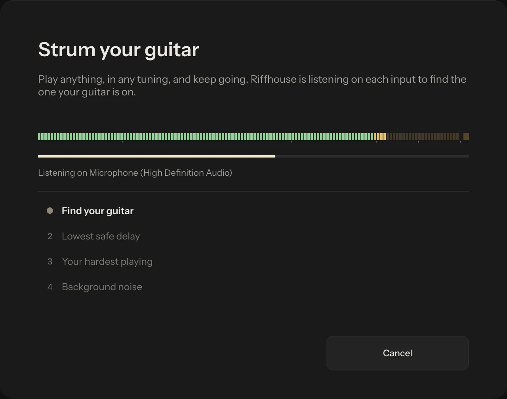

Guitar to a laptop, no audio interface
Yes, it works. Plug the guitar into the laptop’s mic jack with a 6.35 mm to 3.5 mm adapter, put on wired headphones and run a free amp simulator. Riffhouse is one for Windows 10 and 11, and it puts back the treble a mic jack takes away.
What you need
Your guitar cable
The 6.35 mm cable you would plug into an amp.
One adapter
A 6.35 mm socket on a 3.5 mm plug. It is the only thing you may have to buy.
Wired headphones
Bluetooth adds a delay you can hear, and speakers can howl.
One socket for headphones and mic together? Add a splitter with a separate mic socket.
Four steps

Plug in
Adapter into the mic jack, cable into the adapter, headphones on. Turn the guitar’s volume all the way up.
Install Riffhouse
One installer for Windows 10 and 11, with no account. Windows warns once: press More info, then Run anyway.
Strum
Setup listens on every input, finds the one your guitar is on and sets your level. It takes under a minute.
Pick a tone
There are 197 tones, sorted by genre and sound. Start with First Light Clean.


What a mic jack does to a guitar
It eats treble
A mic jack is made for a microphone, so a guitar sounds dull. Riffhouse measures the loss and puts back up to 24 dB.
It hisses
The gate sits just above your noise, and mains hum is filtered out.
It adds delay
Setup keeps the shortest audio buffer that runs without crackles.
An audio interface is still quieter. If you get one later, pick it as your input.

Questions
More about the app on the home page.
Can I plug a guitar straight into a laptop?
Yes. Use the mic jack and a 6.35 mm to 3.5 mm adapter. A guitar’s signal is small, like a microphone’s, so the mic jack is the right socket. A socket that is only for headphones will not work.
Is it safe for the laptop?
Yes. A guitar puts out a very small signal. Never plug an amp’s speaker output into a computer: that one can do damage.
My laptop has only one socket. What now?
That socket carries headphones and a mic together. Use a splitter with a separate mic socket, and plug the adapter into the mic side.
Do I need to install an audio driver?
No. Riffhouse runs on the sound Windows already has, and setup keeps the fastest mode that runs without crackles.
Why does my guitar sound dull through the mic jack?
The jack is built for a microphone and cuts a guitar’s treble. Riffhouse measures the cut while you strum and puts it back.
Will a USB guitar cable work?
Yes. Windows shows it as an input, and setup finds it when you strum.
Is Riffhouse really free?
Yes. No price, no account, no ads and no paid tier. The code is open under the AGPL-3.0 licence. Why it’s free.
Does it work on a Mac or a phone?
Not yet. Riffhouse has an installer for Windows 10 and 11 only.